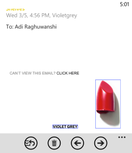

Just a little rant I need to do. I was trying to write an HTML email (you know, the beyond ugly ones with tables and tables within tables and inline styles). All was going well, when I saw that on my Windows Phone, all my images which were links had a blue border around them.

I looked around for a solution, and sure enough dozens of users had the same problem. The fix was (supposed to be) simple. Just put a
border: none;
outline: none;
on the image. Ofcourse, that didn't help. I tried inlining that into the a tag, the img tag, the outer td, tr & table but nothing worked.
Finally this comment at stackoverflow helped me out. Apparently "IE adds a border around images if they’re the child of an anchor". So adding
a img {
border: none;
}
in the css fixed it. Goddamn you IE for mobile...Goddamn you.